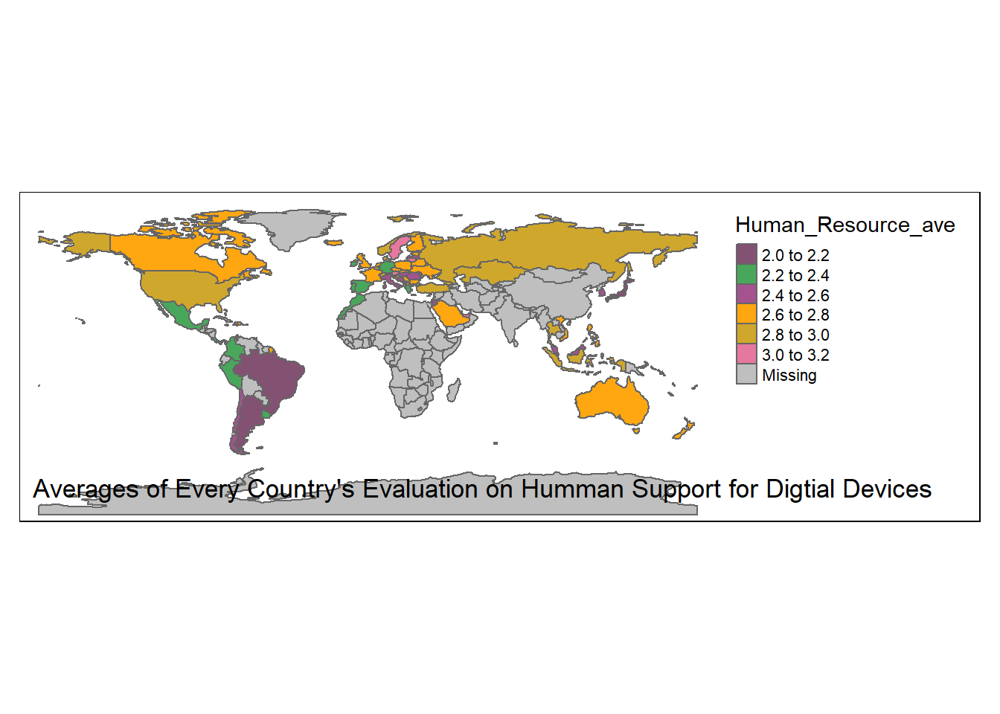
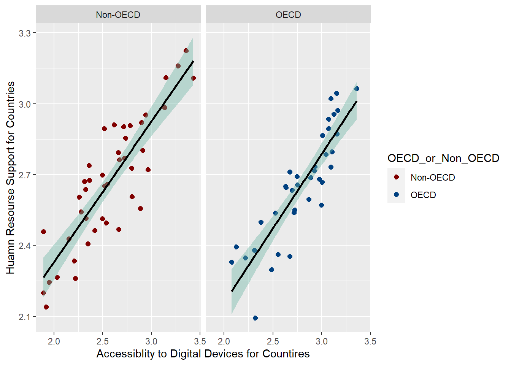
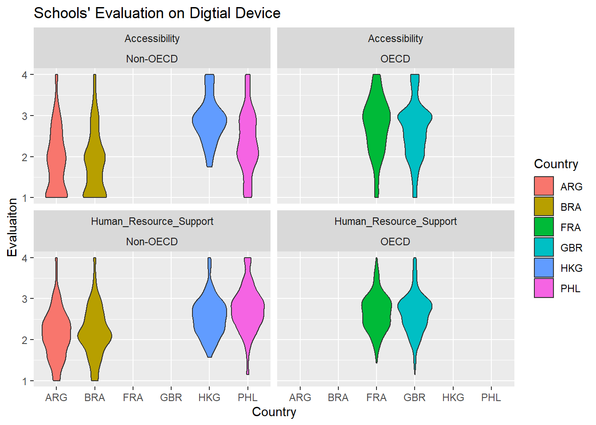

The Organization for Economic Co-operation and Development (OECD), founded in 1960, has conducted a constant series of survey “Programme for International Student Assessment” (PISA) that evaluates 15-year-olds’ performance since 2000. The datasets obtained by these surveys have helped governments and education policy makers launch education reforms in an effort to “meet real-life challenges” (https://www.oecd.org/pisa/) in their countries. This paper explores the latest survey in 2018. Because the survey covers a wide range of issues regarding students’ performance and schools’ situations, the paper here have to narrow it focus to a small issue–evaluation on digital devices in schools. The paper will begin with a brief introduction of the dataset and a resulting tidy data part. In the third section, the paper will explore the clean data through visualization in order to answer a set of questions: what are regional differences all over the world? Is there a distinction between OECD countries and Non-OECD countries? What follows is a further case study of five countries and one region. The question will be if there are differences or similarities within OECD countries and Non-OECD countries? The final part will reflect the limits of dataset and the process as the project unfolds along with a preliminary conclusion on the project.
Data
Code
# read and get a overview of the data and pisa <-read_csv('_data/CY07_MSU_SCH_QQQ.csv')dim(pisa)
This original OECD PISA 2018 School Questionnaire Dataset is one part of PISA 2018 dataset with a focus on schools. It covers 80 countries and regions all over the world. The dataset documents 21,903 schools’ responses regarding 187 questions. Some key identifiers include CNT (Country Name), STRATUM (Region Name) and OECD (belongs to or not OECD). I have narrowed my focus on a set of questions that start with “SC115.” “SC115” is a series of questions about the evaluation on digital devices in different countries. Some questions measure the availability of digital devices in these countries. Some questions interrogate if there are enough supports for teachers in terms of training program, technical support, and time (See PISA2018 “School Questionnaire,” p. 9). So I reorganize the dataset. I first use the “select’’ function to create a dataset covering all”SC155” questions. Then, I create another dataset containing all identifiers information (11 columns). Eventually, I use the “cbind” function to combine these two ones into a new dataset “pisa2018_joint” that contains SC155Q (11 questions) and all identifiers information (11 columns). After preliminarily tidying data, the clean dataset now records 29,903 schools’ responses concerning eleven questions along with their eleven identifiers.
Visualization
Painting a Global Map
Code
#tidy data for the world mappisa2018_joint$Accessibility=rowMeans(pisa2018_joint[,c("SC155Q01HA","SC155Q02HA", "SC155Q03HA","SC155Q04HA")])pisa2018_joint$Human_Resource_Support=rowMeans(pisa2018_joint[ ,c("SC155Q05HA","SC155Q06HA", "SC155Q07HA","SC155Q08HA","SC155Q09HA", "SC155Q10HA", "SC155Q11HA")])pisa2018_joint_clean <-pisa2018_joint %>%select(CNT, STRATUM, OECD, Accessibility, Human_Resource_Support) %>%group_by(CNT) %>%mutate(Accessibility_Country_Ave=mean(Accessibility, na.rm=T)) %>%mutate(Human_Resource_ave=mean(Human_Resource_Support, na.rm=T)) %>%select(CNT,OECD, Accessibility_Country_Ave, Human_Resource_ave) %>%distinct() %>%arrange(desc(Accessibility_Country_Ave))%>%mutate(OECD_or_Non_OECD =case_when( OECD==0~"Non-OECD", OECD==1~"OECD")) %>%select(-OECD)pisa2018_joint_clean
The set of questions “SC155” surveys the accessibility to digital devices and its related training as well as assistance. I further found that the questions from SC155Q01HA to SC155Q04HA focus on the accessibility to digital devices while the questions from SC155Q05HA to SC155Q11HA stress on if the schools offer enough training, support, and incentives. I mutate two new variables–“Accessibility” and “Human_Resource_Support” that respectively calculate the average of the former set of questions and the latter by applying the “rowMeans” function. Besides, I create another two new variables—“Accessibility_Country_Ave” and “Human_Resource_Support”– to calculate every country averages in terms of “Accessibility” and “Human_Resource_Support”. Furthermore, in order to delete the duplicated averages for every country, I apply the “distinct” function. After that, the dataset has 80 rows that present 80 countries and regions. Finally, I mutate “OECD_or_Non_OECD” as well in order to create graphics more easily later. After tidying data, the dataset “pisa2018_joint_clean” has four columns—CNT (Country Name), Accessibility_Country_Ave, Human_Resource_ave, and OECD_or_Non_OECD–and 80 rows.
Code
# joint data--merge pisa2018 into the world map datadata("World")world2<-World %>%mutate(CNT=iso_a3) %>%select(-iso_a3)world2world_pisa <-merge(x=world2, y=pisa2018_joint_clean, by="CNT", all.x=T)world_pisa
In order to create a map, I need to use the “merge” function to merge the dataset “pisa2018_joint_clean” to the map dataset “World.” I found that “iso_a3” in “World” shares the same code with “CNT” in my dataset. I merge my dataset into “World” dataset by “CNT” and I keep all the map dataset information. After that, “World” dataset includes the information about “Accessibility_Country_Ave” and “Human_Resource_ave.”
Code
#draw world map show regional differences# draw a world map about the accessibly to digital devices and human resource supportsbbox_new <-st_bbox(world_pisa)xrange <- bbox_new$xmax - bbox_new$xmin yrange <- bbox_new$ymax - bbox_new$yminbbox_new[3] <- bbox_new[3] + (0.4* xrange)bbox_new[4] <- bbox_new[4] + (0.35* yrange)bbox_new <- bbox_new %>%st_as_sfc()tm_shape(world_pisa, bbox=bbox_new) +tm_polygons(col="Accessibility_Country_Ave", palette ="Set1")+tm_layout(legend.position =c("right", "top"), title="Averages of Every Country's Accessiblity to Digtial Devices", title.position =c('left', 'bottom'))
Code
tm_shape(world_pisa,bbox=bbox_new) +tm_polygons(col="Human_Resource_ave", palette ="Set1")+tm_layout(legend.position =c("right", "top"), title="Averages of Every Country's Evaluation on Humman Support for Digtial Devices", title.position =c('right', 'bottom'))

Finally, I create two world maps reflecting regional differences in terms of accessibility to digital devices and human resources supports for them all over the world. Apparently, just a few countries have the grades higher than 3 points, which reflects that these countries’ agreement of enjoying the good accessibility to digital devices. However, even some developed countries still express their limited accessibility to digital devices such as United Kingdom and France. The phenomenon, in fact, opens more questions and their answers will lie in further investigations on these countries. I will take France and Unite Kingdom as case studies later. With respect to “Human Resource Support,” most countries have reported the grades under 3 points. This may not disclose that these countries (whatever OECD countries or Non-OECD ones) share the similar scenarios because there is no objective measurements for them to measure their human resources supports for digital devices. Therefore, instead of reflecting that OECD countries lack human resources supports, the data may show OECD and non-OECD countries have distinct expectations on human resources supports. So self-report can only demonstrate the gap between their expectations and current experiences.
Painting World in Graphics
Code
# further tidy data and pivot_longer# world difference in generalpisa2018_clean_pivot<-pisa2018_joint_clean %>%pivot_longer(cols=c(Accessibility_Country_Ave, Human_Resource_ave), names_to ="Group", values_to ="Evaluation")pisa2018_clean_pivot %>%ggplot(aes(Evaluation, fill=Group))+stat_boxplot(geom ="errorbar", # Error barswidth =0.1)+geom_boxplot()+facet_wrap(~Group+OECD_or_Non_OECD)+labs(title="Pisa2018 Digital Diveces Evaluation")+coord_flip()
In order to further tidy data and create comparative graphics, I first used pivot_longer to create two new variables “Group” and “Evaluation”.I put the original variables–“Accessibility_Country_Ave” and “Human_Resource_ave” names to “Group” and values to “Evaluation.” After cleaning and rearranging the dataset, I create four graphics. The boxplot graphics reveal that generally speaking, OECD countries enjoy the higher access to digital devices than non-OECD countries. Because the median of OECD group is significantly higher than that of Non-OECD.
But these two groups have reported that their human resource evaluations are in the similar range. The median of OECD countries is similar to that of Non-OECD countries. Besides, the variation of OECD countries is smaller.
The result of the graphics concerning “human resource supports” reflects the limits to this survey’s methodology that the world map already has showed. Because this survey is reliance on schools’ self-report. There is no objective measurements for them to measure their access to and human resources supports for digital devices. Therefore, instead of reflecting that OECD countries lack human resources support, the data may show OECD and non-OECD countries have distinct expectations on human resources support. So self-report can only demonstrate the gap between their expectations and current situations.
Relation between “Accessibility to Digital Devices” and “Human Resource Support for Digital Human Resource”
Code
# Bivariate Visualization--point plot# differentiate OECD and Non-OECDpisa2018_joint_clean %>%ggplot(aes(x=Accessibility_Country_Ave, y=Human_Resource_ave, color=OECD_or_Non_OECD))+geom_point(size=2)+scale_colour_manual(values=c("#800000","#004080"))+xlab("Accessiblity to Digital Devices for Countires")+ylab("Huamn Resourse Support for Countries")+geom_smooth(method=lm , color="black", fill="#69b3a2", se=TRUE)+facet_wrap(~OECD_or_Non_OECD)

The point plot is good at showing the relationship between two groups of numbers. I use it to capture the correlation between “Accessibility to Digital Devices” and”Human Resource Support” in each country. The smooth line has demonstrated that the positive correlation between “Accessibility to Digital Devices” and”Human Resource Support” is true for the both groups.
The point plot shows that many points locate in a longer distance to the line in Non-OECD countries. On the contrary, points in OECD countries are much closer to the line. This situation also uncovers the finding, as I have discussed above, that the variation of OECD countries is relatively smaller than that of Non-OECD countries.
A further Case Study of Six Countries and Region
I have already deployed a world map and several boxplots to demonstrate regional differences all over the world and arrive at some primitive conclusions. What follows is I’d like to dig into 5 countries and one region (Hong Kong, Philippines, Argentina and Brazil belong to non-OECD, Britain and France belong to non-OECD).
Code
# tidy data about the case study# choose six cases to look at differences between OCED group and Non-OECD group# United Kingdom (GBR), Hong Kong (HKG), Philippines (PHL), Argentina (ARG), Brazil(BRA), France(FRA)pisa2018_joint_case_study <- pisa2018_joint %>%select(CNT, STRATUM, OECD, SC155Q01HA,SC155Q02HA, SC155Q03HA, SC155Q04HA, SC155Q05HA, SC155Q06HA, SC155Q07HA, SC155Q08HA, SC155Q09HA, SC155Q10HA, SC155Q11HA) %>%group_by(STRATUM) %>%arrange(STRATUM) %>%filter(CNT=="GBR"| CNT=="HKG"| CNT=="PHL"| CNT=="ARG"| CNT=="BRA"|CNT=="FRA" )pisa2018_joint_case_study
Following the above-mentioned finding that the questions from SC155Q01HA to SC155Q04HA focus on the accessibility to digital devices while the questions from SC155Q05HA to SC155Q11HA stress on if the schools offer enough training, support, and incentives. I apply the same tidy data approach to the case study’s dataset. I mutate two new variables—“Accessibility” and “Human_Resource_Support” that respectively calculate the average of the former and the latter. I use pivot_longer to rearrange the dataset in order to show these two categories in one graphic. The result is the dataset “pisa2018_case_study_clean.”
I use the violin graphics to disclose the evaluation of digital devices in six cases with the dimension of “Accessibility” and “Human Resource Support”. The graphic has showed, whatever accessibility and human resource supports, Hong Kong, France and Britain report higher grades than ones in Argentina, Brazil, and the Philippines reply. Most schools’ in Hong Kong, France and Britain responses are around the range of “agree” while most schools’ in Argentina, Brazil, the Philippines replies are around the range of “disagree”, which reflects that schools in Argentina, Brazil, the Philippines are not satisfied by their current situations.
Code
pisa2018_case_study_clean %>%ggplot(aes(CNT, Evaluation,fill=CNT), na.rm=T)+geom_violin()+xlab("Country")+ylab("Evaluaiton")+ggtitle("Schools' Evaluation on Digtial Device")+facet_wrap(~Group+OECD_or_Non_OECD)+labs(fill="Country")

I add one more dimension–OECD or Non-OECD to this violin plot. In fact, the plot demonstrates the variation of the evaluation on digital devices in non-OECD countries. In terms of “Accessibility,” Hong Kong has a better access to digital devices than Argentina, Brazil, the Philippines. the similar situation happens to the evaluation of “Human Resources Support” as well. The fact may be interpreted that Hong Kong has more enough fiscal resources to support their schools. Despite of not good as Hong Kong, more percentage of schools in the Philippines has reported that they are satisfied by the access to and human resource support for digital devices than ones in Argentina and Brazil.
By contrast, two OECD countries–France and Brain share the similar shapes in terms of accessibility and human resource support. It reflects that most schools in these two countries believe that they enjoy an good access to digital device and receive enough human resources support. Also, it reflects that these is no a big variation between them.
Code
# using SC155Q01HA as a case study to show part-whole relationshipsdf<-pisa2018_joint %>%group_by(CNT) %>%filter(CNT=="GBR"| CNT=="HKG"| CNT=="PHL"| CNT=="ARG"| CNT=="BRA"|CNT=="FRA" ) %>%drop_na() %>%count(Q1=factor(SC155Q01HA))%>%mutate(pct=paste0(sprintf("%4.1f",n/sum(n)*100), "%"))ggplot(df, aes(x=CNT, y=n ,fill=Q1), na.rm=T)+geom_bar(stat="identity", position="dodge")+geom_text(aes(label=pct), position =position_dodge(width =1),vjust=-0.5, size=2)+ylab("Schools' Response Count")+xlab("Country")+labs(fill="Digital Devices Evaluation")+scale_fill_discrete(labels=c("Strongly Disagree", "Disagree", "Agree", "Strongly Agree"))
Eventually, I’d like to take schools’ responses to SC155Q01HA as a case study to disclose part-whole relationships. The bar chart reflects schools’ responses to SC155Q01HA –“The number of digital devices connected to the Internet is sufficient.” (PISA 2018 “School Questionnaire,” p. 9). The bar plot shows the homogeneous tendency to the above-mentioned violin graphics. It has demonstrated that most schools in Argentina and Brazil are not happy with their accessibility to digital devices–more 70% of them report “strongly disagree” and “disagree.” Schools in the Philippines enjoyed the better accessibility to digital devices–less than 60% of them return the native responses. By sharp contrast, 60-70% of schools in France, the United Kingdom and Hong Kong are happy with their accessibility.More responses from France, Britain and Hong Kong reported “disagree” that that from Argentina, Brazil, and the Philippines.
But it reveals an additional funding that the number of responses from France is relatively fewer in terms of its size. In other words, the sample of France is very tiny, which may not reflect the situation there, compared with the samples from the rest five countries and area. Unfortunately, the OECD does offer explanation in its Code Book.
A Brief Conclusion and Reflection
The world map and box plots have demonstrated that concerning the accessibility to digital devices, most of OECD countries are satisfied by their accessibility. By contrast, most of Non-OECD countries are disappointed by it. I am surprised by the finding that the both groups complain their “human resources support.” However, this fact reflects the limits of the survey’s methodology that there is no objective measurement for these countries to measure their human resources support.
Second, the case studies indicates the similar distribution of schools’ responses within Argentina, Brazil, the Philippines. Hong Kong, France and UK share the another similar distribution. Although it is not a member of OECD, Hong Kong share more characteristics with OECD countries.
Moreover, I have noted that regional differences within a country or a region. However, the Code Book doesn’t offer a consistent method that draws regions in different countries and regions, which disables me to further propose the causes of regional differences. Probably, I need to add other methods that further enrich our understanding of this data in the future.
Ultimately, I am wondering how I can offer clearer descriptions and more attractive narrative for graphics and how I can find better graphics to present the data. Furthermore, I have noted that the dataset and my visualization only present the differences of eighty countries’ accessibility to and human resources supports for digital devices but fail to explain what cause the differences. Besides, even two countries present the same number. It may not show these two countries share the similar circumstance. As I mentioned before, numbers here only reflect the gap between current experiences and expectations of every country and every school. This is the limits on our survey approach.
Bibliography
OECD PISA 2018 School Questionnaire Dataset-https://www.kaggle.com/datasets/dilaraahan/pisa-2018-school-questionnaire?resource=download
Wickham, H., & Grolemund, G. (2016). R for data science: Visualize, model, transform, tidy, and import data. OReilly Media.
The R Graph Gallery-https://r-graph-gallery.com/
Source Code
---title: "DACSS601: Dtat Science Fundamentals Fianl Paper Guanhua Tan"editor: sourceauthor: "Guanhua Tan"desription: "Final Paper"date: "11/30/2022"output: distill::distill_articleformat: html: toc: true code-fold: true code-copy: true code-tools: truecategories: - Final Porject - pisa2018---```{r}# import packagelibrary(tidyverse)library(tmap)library(sf)knitr::opts_chunk$set(echo =TRUE, warning=FALSE, message=FALSE)```# IntroductionThe Organization for Economic Co-operation and Development (OECD), founded in 1960, has conducted a constant series of survey "Programme for International Student Assessment" (PISA) that evaluates 15-year-olds' performance since 2000. The datasets obtained by these surveys have helped governments and education policy makers launch education reforms in an effort to "meet real-life challenges" (https://www.oecd.org/pisa/) in their countries. This paper explores the latest survey in 2018. Because the survey covers a wide range of issues regarding students' performance and schools' situations, the paper here have to narrow it focus to a small issue--evaluation on digital devices in schools. The paper will begin with a brief introduction of the dataset and a resulting tidy data part. In the third section, the paper will explore the clean data through visualization in order to answer a set of questions: what are regional differences all over the world? Is there a distinction between OECD countries and Non-OECD countries? What follows is a further case study of five countries and one region. The question will be if there are differences or similarities within OECD countries and Non-OECD countries? The final part will reflect the limits of dataset and the process as the project unfolds along with a preliminary conclusion on the project.# Data```{r}# read and get a overview of the data and pisa <-read_csv('_data/CY07_MSU_SCH_QQQ.csv')dim(pisa)length(unique(pisa$CNT))pisa2018 <- pisa %>%select(starts_with("SC155"))dim(pisa2018)pisa2018_joint <-cbind(pisa[,1:12], pisa2018)head(pisa2018_joint)```## Briefly Describe the Dataset.This original OECD PISA 2018 School Questionnaire Dataset is one part of PISA 2018 dataset with a focus on schools. It covers 80 countries and regions all over the world. The dataset documents 21,903 schools' responses regarding 187 questions. Some key identifiers include CNT (Country Name), STRATUM (Region Name) and OECD (belongs to or not OECD). I have narrowed my focus on a set of questions that start with "SC115." "SC115" is a series of questions about the evaluation on digital devices in different countries. Some questions measure the availability of digital devices in these countries. Some questions interrogate if there are enough supports for teachers in terms of training program, technical support, and time (See PISA2018 "School Questionnaire," p. 9). So I reorganize the dataset. I first use the "select'' function to create a dataset covering all "SC155" questions. Then, I create another dataset containing all identifiers information (11 columns). Eventually, I use the "cbind" function to combine these two ones into a new dataset "pisa2018_joint" that contains SC155Q (11 questions) and all identifiers information (11 columns). After preliminarily tidying data, the clean dataset now records 29,903 schools' responses concerning eleven questions along with their eleven identifiers.# Visualization## Painting a Global Map```{r, results='hide'}#tidy data for the world mappisa2018_joint$Accessibility=rowMeans(pisa2018_joint[,c("SC155Q01HA","SC155Q02HA", "SC155Q03HA","SC155Q04HA")])pisa2018_joint$Human_Resource_Support=rowMeans(pisa2018_joint[ ,c("SC155Q05HA","SC155Q06HA", "SC155Q07HA","SC155Q08HA","SC155Q09HA", "SC155Q10HA", "SC155Q11HA")])pisa2018_joint_clean <-pisa2018_joint %>%select(CNT, STRATUM, OECD, Accessibility, Human_Resource_Support) %>%group_by(CNT) %>%mutate(Accessibility_Country_Ave=mean(Accessibility, na.rm=T)) %>%mutate(Human_Resource_ave=mean(Human_Resource_Support, na.rm=T)) %>%select(CNT,OECD, Accessibility_Country_Ave, Human_Resource_ave) %>%distinct() %>%arrange(desc(Accessibility_Country_Ave))%>%mutate(OECD_or_Non_OECD =case_when( OECD==0~"Non-OECD", OECD==1~"OECD")) %>%select(-OECD)pisa2018_joint_clean```The set of questions "SC155" surveys the accessibility to digital devices and its related training as well as assistance. I further found that the questions from SC155Q01HA to SC155Q04HA focus on the accessibility to digital devices while the questions from SC155Q05HA to SC155Q11HA stress on if the schools offer enough training, support, and incentives. I mutate two new variables--"Accessibility" and "Human_Resource_Support" that respectively calculate the average of the former set of questions and the latter by applying the "rowMeans" function. Besides, I create another two new variables---"Accessibility_Country_Ave" and "Human_Resource_Support"-- to calculate every country averages in terms of "Accessibility" and "Human_Resource_Support". Furthermore, in order to delete the duplicated averages for every country, I apply the "distinct" function. After that, the dataset has 80 rows that present 80 countries and regions. Finally, I mutate "OECD_or_Non_OECD" as well in order to create graphics more easily later. After tidying data, the dataset "pisa2018_joint_clean" has four columns---CNT (Country Name), Accessibility_Country_Ave, Human_Resource_ave, and OECD_or_Non_OECD--and 80 rows.```{r,results="hide"}# joint data--merge pisa2018 into the world map datadata("World")world2<-World %>%mutate(CNT=iso_a3) %>%select(-iso_a3)world2world_pisa <-merge(x=world2, y=pisa2018_joint_clean, by="CNT", all.x=T)world_pisa```In order to create a map, I need to use the "merge" function to merge the dataset "pisa2018_joint_clean" to the map dataset "World." I found that "iso_a3" in "World" shares the same code with "CNT" in my dataset. I merge my dataset into "World" dataset by "CNT" and I keep all the map dataset information. After that, "World" dataset includes the information about "Accessibility_Country_Ave" and "Human_Resource_ave."```{r}#draw world map show regional differences# draw a world map about the accessibly to digital devices and human resource supportsbbox_new <-st_bbox(world_pisa)xrange <- bbox_new$xmax - bbox_new$xmin yrange <- bbox_new$ymax - bbox_new$yminbbox_new[3] <- bbox_new[3] + (0.4* xrange)bbox_new[4] <- bbox_new[4] + (0.35* yrange)bbox_new <- bbox_new %>%st_as_sfc()tm_shape(world_pisa, bbox=bbox_new) +tm_polygons(col="Accessibility_Country_Ave", palette ="Set1")+tm_layout(legend.position =c("right", "top"), title="Averages of Every Country's Accessiblity to Digtial Devices", title.position =c('left', 'bottom'))tm_shape(world_pisa,bbox=bbox_new) +tm_polygons(col="Human_Resource_ave", palette ="Set1")+tm_layout(legend.position =c("right", "top"), title="Averages of Every Country's Evaluation on Humman Support for Digtial Devices", title.position =c('right', 'bottom'))```Finally, I create two world maps reflecting regional differences in terms of accessibility to digital devices and human resources supports for them all over the world. Apparently, just a few countries have the grades higher than 3 points, which reflects that these countries' agreement of enjoying the good accessibility to digital devices. However, even some developed countries still express their limited accessibility to digital devices such as United Kingdom and France. The phenomenon, in fact, opens more questions and their answers will lie in further investigations on these countries. I will take France and Unite Kingdom as case studies later. With respect to "Human Resource Support," most countries have reported the grades under 3 points. This may not disclose that these countries (whatever OECD countries or Non-OECD ones) share the similar scenarios because there is no objective measurements for them to measure their human resources supports for digital devices. Therefore, instead of reflecting that OECD countries lack human resources supports, the data may show OECD and non-OECD countries have distinct expectations on human resources supports. So self-report can only demonstrate the gap between their expectations and current experiences.## Painting World in Graphics```{r}# further tidy data and pivot_longer# world difference in generalpisa2018_clean_pivot<-pisa2018_joint_clean %>%pivot_longer(cols=c(Accessibility_Country_Ave, Human_Resource_ave), names_to ="Group", values_to ="Evaluation")pisa2018_clean_pivot %>%ggplot(aes(Evaluation, fill=Group))+stat_boxplot(geom ="errorbar", # Error barswidth =0.1)+geom_boxplot()+facet_wrap(~Group+OECD_or_Non_OECD)+labs(title="Pisa2018 Digital Diveces Evaluation")+coord_flip()```In order to further tidy data and create comparative graphics, I first used pivot_longer to create two new variables "Group" and "Evaluation".I put the original variables--"Accessibility_Country_Ave" and "Human_Resource_ave" names to "Group" and values to "Evaluation." After cleaning and rearranging the dataset, I create four graphics. The boxplot graphics reveal that generally speaking, OECD countries enjoy the higher access to digital devices than non-OECD countries. Because the median of OECD group is significantly higher than that of Non-OECD.But these two groups have reported that their human resource evaluations are in the similar range. The median of OECD countries is similar to that of Non-OECD countries. Besides, the variation of OECD countries is smaller.The result of the graphics concerning "human resource supports" reflects the limits to this survey's methodology that the world map already has showed. Because this survey is reliance on schools' self-report. There is no objective measurements for them to measure their access to and human resources supports for digital devices. Therefore, instead of reflecting that OECD countries lack human resources support, the data may show OECD and non-OECD countries have distinct expectations on human resources support. So self-report can only demonstrate the gap between their expectations and current situations.## Relation between "Accessibility to Digital Devices" and "Human Resource Support for Digital Human Resource"```{r}# Bivariate Visualization--point plot# differentiate OECD and Non-OECDpisa2018_joint_clean %>%ggplot(aes(x=Accessibility_Country_Ave, y=Human_Resource_ave, color=OECD_or_Non_OECD))+geom_point(size=2)+scale_colour_manual(values=c("#800000","#004080"))+xlab("Accessiblity to Digital Devices for Countires")+ylab("Huamn Resourse Support for Countries")+geom_smooth(method=lm , color="black", fill="#69b3a2", se=TRUE)+facet_wrap(~OECD_or_Non_OECD)```The point plot is good at showing the relationship between two groups of numbers. I use it to capture the correlation between "Accessibility to Digital Devices" and"Human Resource Support" in each country. The smooth line has demonstrated that the positive correlation between "Accessibility to Digital Devices" and"Human Resource Support" is true for the both groups.The point plot shows that many points locate in a longer distance to the line in Non-OECD countries. On the contrary, points in OECD countries are much closer to the line. This situation also uncovers the finding, as I have discussed above, that the variation of OECD countries is relatively smaller than that of Non-OECD countries.## A further Case Study of Six Countries and RegionI have already deployed a world map and several boxplots to demonstrate regional differences all over the world and arrive at some primitive conclusions. What follows is I'd like to dig into 5 countries and one region (Hong Kong, Philippines, Argentina and Brazil belong to non-OECD, Britain and France belong to non-OECD).```{r, results='hide'}# tidy data about the case study# choose six cases to look at differences between OCED group and Non-OECD group# United Kingdom (GBR), Hong Kong (HKG), Philippines (PHL), Argentina (ARG), Brazil(BRA), France(FRA)pisa2018_joint_case_study <- pisa2018_joint %>%select(CNT, STRATUM, OECD, SC155Q01HA,SC155Q02HA, SC155Q03HA, SC155Q04HA, SC155Q05HA, SC155Q06HA, SC155Q07HA, SC155Q08HA, SC155Q09HA, SC155Q10HA, SC155Q11HA) %>%group_by(STRATUM) %>%arrange(STRATUM) %>%filter(CNT=="GBR"| CNT=="HKG"| CNT=="PHL"| CNT=="ARG"| CNT=="BRA"|CNT=="FRA" )pisa2018_joint_case_study``````{r,results='hide'}#further tidy datapisa2018_joint_case_study$Accessibility=rowMeans(pisa2018_joint_case_study[,c("SC155Q01HA","SC155Q02HA", "SC155Q03HA","SC155Q04HA")])pisa2018_joint_case_study$Human_Resource_Support=rowMeans(pisa2018_joint_case_study[,c("SC155Q05HA","SC155Q06HA", "SC155Q07HA","SC155Q08HA","SC155Q09HA", "SC155Q10HA", "SC155Q11HA")])pisa2018_case_study_clean <- pisa2018_joint_case_study %>%select(CNT,STRATUM,OECD, Accessibility, Human_Resource_Support) %>%pivot_longer(cols=c(Accessibility, Human_Resource_Support), names_to ="Group", values_to ="Evaluation")%>%mutate(OECD_or_Non_OECD =case_when( OECD==0~"Non-OECD", OECD==1~"OECD")) %>%select(-OECD)pisa2018_case_study_clean```Following the above-mentioned finding that the questions from SC155Q01HA to SC155Q04HA focus on the accessibility to digital devices while the questions from SC155Q05HA to SC155Q11HA stress on if the schools offer enough training, support, and incentives. I apply the same tidy data approach to the case study's dataset. I mutate two new variables---"Accessibility" and "Human_Resource_Support" that respectively calculate the average of the former and the latter. I use pivot_longer to rearrange the dataset in order to show these two categories in one graphic. The result is the dataset "pisa2018_case_study_clean."```{r}# violin graphicpisa2018_case_study_clean %>%ggplot(aes(CNT,Evaluation, fill=CNT), na.rm=T) +geom_violin()+facet_wrap(~Group)+xlab("Country")+ylab("Evaluation")+ggtitle("Schools' Evaluation on Digtial Device")+labs(fill="Country")```I use the violin graphics to disclose the evaluation of digital devices in six cases with the dimension of "Accessibility" and "Human Resource Support". The graphic has showed, whatever accessibility and human resource supports, Hong Kong, France and Britain report higher grades than ones in Argentina, Brazil, and the Philippines reply. Most schools' in Hong Kong, France and Britain responses are around the range of "agree" while most schools' in Argentina, Brazil, the Philippines replies are around the range of "disagree", which reflects that schools in Argentina, Brazil, the Philippines are not satisfied by their current situations.```{r}pisa2018_case_study_clean %>%ggplot(aes(CNT, Evaluation,fill=CNT), na.rm=T)+geom_violin()+xlab("Country")+ylab("Evaluaiton")+ggtitle("Schools' Evaluation on Digtial Device")+facet_wrap(~Group+OECD_or_Non_OECD)+labs(fill="Country")```I add one more dimension--OECD or Non-OECD to this violin plot. In fact, the plot demonstrates the variation of the evaluation on digital devices in non-OECD countries. In terms of "Accessibility," Hong Kong has a better access to digital devices than Argentina, Brazil, the Philippines. the similar situation happens to the evaluation of "Human Resources Support" as well. The fact may be interpreted that Hong Kong has more enough fiscal resources to support their schools. Despite of not good as Hong Kong, more percentage of schools in the Philippines has reported that they are satisfied by the access to and human resource support for digital devices than ones in Argentina and Brazil.By contrast, two OECD countries--France and Brain share the similar shapes in terms of accessibility and human resource support. It reflects that most schools in these two countries believe that they enjoy an good access to digital device and receive enough human resources support. Also, it reflects that these is no a big variation between them.```{r}# using SC155Q01HA as a case study to show part-whole relationshipsdf<-pisa2018_joint %>%group_by(CNT) %>%filter(CNT=="GBR"| CNT=="HKG"| CNT=="PHL"| CNT=="ARG"| CNT=="BRA"|CNT=="FRA" ) %>%drop_na() %>%count(Q1=factor(SC155Q01HA))%>%mutate(pct=paste0(sprintf("%4.1f",n/sum(n)*100), "%"))ggplot(df, aes(x=CNT, y=n ,fill=Q1), na.rm=T)+geom_bar(stat="identity", position="dodge")+geom_text(aes(label=pct), position =position_dodge(width =1),vjust=-0.5, size=2)+ylab("Schools' Response Count")+xlab("Country")+labs(fill="Digital Devices Evaluation")+scale_fill_discrete(labels=c("Strongly Disagree", "Disagree", "Agree", "Strongly Agree"))```Eventually, I'd like to take schools' responses to SC155Q01HA as a case study to disclose part-whole relationships. The bar chart reflects schools' responses to SC155Q01HA --"The number of digital devices connected to the Internet is sufficient." (PISA 2018 "School Questionnaire," p. 9). The bar plot shows the homogeneous tendency to the above-mentioned violin graphics. It has demonstrated that most schools in Argentina and Brazil are not happy with their accessibility to digital devices--more 70% of them report "strongly disagree" and "disagree." Schools in the Philippines enjoyed the better accessibility to digital devices--less than 60% of them return the native responses. By sharp contrast, 60-70% of schools in France, the United Kingdom and Hong Kong are happy with their accessibility.More responses from France, Britain and Hong Kong reported "disagree" that that from Argentina, Brazil, and the Philippines.But it reveals an additional funding that the number of responses from France is relatively fewer in terms of its size. In other words, the sample of France is very tiny, which may not reflect the situation there, compared with the samples from the rest five countries and area. Unfortunately, the OECD does offer explanation in its Code Book.# A Brief Conclusion and ReflectionThe world map and box plots have demonstrated that concerning the accessibility to digital devices, most of OECD countries are satisfied by their accessibility. By contrast, most of Non-OECD countries are disappointed by it. I am surprised by the finding that the both groups complain their "human resources support." However, this fact reflects the limits of the survey's methodology that there is no objective measurement for these countries to measure their human resources support.Second, the case studies indicates the similar distribution of schools' responses within Argentina, Brazil, the Philippines. Hong Kong, France and UK share the another similar distribution. Although it is not a member of OECD, Hong Kong share more characteristics with OECD countries.Moreover, I have noted that regional differences within a country or a region. However, the Code Book doesn't offer a consistent method that draws regions in different countries and regions, which disables me to further propose the causes of regional differences. Probably, I need to add other methods that further enrich our understanding of this data in the future.Ultimately, I am wondering how I can offer clearer descriptions and more attractive narrative for graphics and how I can find better graphics to present the data. Furthermore, I have noted that the dataset and my visualization only present the differences of eighty countries' accessibility to and human resources supports for digital devices but fail to explain what cause the differences. Besides, even two countries present the same number. It may not show these two countries share the similar circumstance. As I mentioned before, numbers here only reflect the gap between current experiences and expectations of every country and every school. This is the limits on our survey approach.# BibliographyOECD PISA 2018 School Questionnaire Dataset-https://www.kaggle.com/datasets/dilaraahan/pisa-2018-school-questionnaire?resource=downloadOECD PISA2018 Code Book-https://www.oecd.org/pisa/data/2018database/PISA2018 "School Questionnaire"-https://www.oecd.org/pisa/data/2018database/CY7_201710_QST_MS_SCQ_NoNotes_final.pdfOECD PISA website-https://www.oecd.org/pisaR Language as programming languageWickham, H., & Grolemund, G. (2016). *R for data science: Visualize, model, transform, tidy, and import data*. OReilly Media.The R Graph Gallery-https://r-graph-gallery.com/\